00이 매뉴얼에 대하여
EPI 에너지성능지표 산정기는 「건축물의 에너지절약설계기준」 에너지성능지표(EPI)를 약식 체크리스트와 정식 별지 제1호서식 두 방식으로 산정하고, A4 검토서·산정서로 출력하는 웹 계산도구입니다. 처음 쓰는 건축·설비 기술자가 화면 순서대로 따라 하며 점수와 의무사항을 검토할 수 있도록 작성했습니다.
| 항목 | 내용 |
|---|---|
| 대상 프로그램 | EPI 에너지성능지표 산정기 Ver-5.4 — 탭 막대 「📘 매뉴얼」 버튼으로 이 문서가 열립니다 |
| 접속 주소 | manminkim-eng.github.io/Energy-Performance-Index |
| 매뉴얼 판 | Ver-5.4 (화면 표기와 같은 판 번호, 초판) · 2026-10-10 · 작성 김만민 건축사(㈜대성건축사사무소) |
| 내려받기 | PDF(A4) · EPI 산정기 열기 |
| 예제 | 본문 그림은 모두 같은 예제(만민 건축사 신사옥 신축공사 · 비주거 · 중부2지역 · 민간 · 연면적 3,500㎡)로 캡처 — 입력값은 부록 A1 |
| 근거 기준 | 「건축물의 에너지절약설계기준」 국토교통부고시 제2026-360호(2026.7.8. 시행) — 4장 조문은 법령 원문(LawMCP, 2026-10-10 조회)으로 대조 |
| 읽는 순서 | 처음이면 1장 → 2장(따라하기) → 필요할 때 3장(탭별 상세). 허가 제출 전에는 4장(기술기준)·5장(작업 방법) |
floorArea처럼 화면 요소 ID를 함께 적었습니다.01EPI 산정기 한눈에 보기
설치 없이 브라우저에서 바로 실행되는 단일 페이지 앱(PWA)입니다. 입력은 내 PC 브라우저 안에서만 처리되며 서버로 전송되지 않습니다.
무엇을 산정하나
에너지성능지표(EPI) 평점 합계와 목표점(65·74점) 적합 여부, 연면적·기관·공조방식에 따른 의무사항 충족 여부
두 가지 방식
약식 — 4부문 44항목 체크(100점 환산) · 정식 — 별지 제1호서식 42항목, 평점 = 기본배점 a × 배점 b
근거
「건축물의 에너지절약설계기준」 제6조·제15조, 별지 제1호서식 (국토교통부고시 제2026-360호(2026.7.8. 시행))
출력
약식 설계전략 검토서 · 별지 제1호서식 산정서(A4 인쇄·PDF) · JPG 저장
1-1. 화면 구성
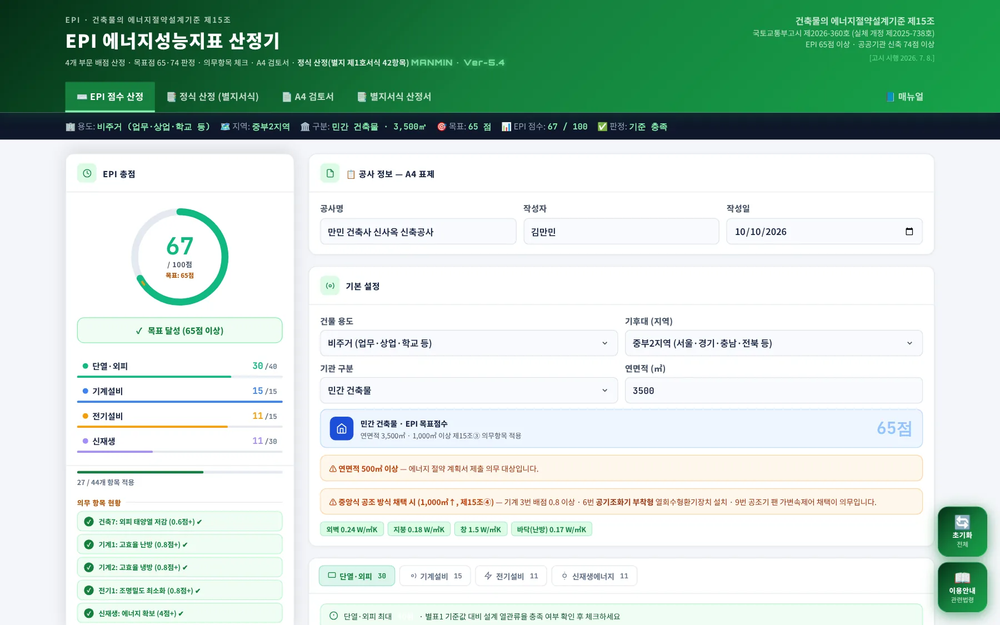
1234567- 1작업 탭: 점수 산정 · 정식 산정 · A4 검토서 · 별지서식 산정서(새 창) · 매뉴얼
- 2요약 스트립: 용도·지역·구분·목표·점수·판정이 입력할 때마다 갱신
- 3EPI 총점 패널: 점수 링·판정·부문별 점수·의무항목 현황
- 4공사 정보: 공사명·작성자·작성일(A4 표제에 표시)
- 5기본 설정: 용도·기후대·기관·연면적 → 목표점과 의무항목 결정
- 6부문 탭: 단열·외피 / 기계설비 / 전기설비 / 신재생에너지
- 7이용안내·초기화 버튼(화면 오른쪽)
| 탭 | 하는 일 | 본문 |
|---|---|---|
| ⌨️ EPI 점수 산정 | 공사 정보·기본 설정 입력, 4부문 약식 체크리스트로 설계 전략 검토 | 3-1~3-3 |
| 📑 정식 산정 (별지서식) | 별지 제1호서식 42항목 배점 b 선택 → 평점 a×b · 의무사항 자동 판정 | 3-4~3-6 |
| 📄 A4 검토서 | 약식 검토서 미리보기 · 약식/별지서식 인쇄 · JPG 저장 | 3-7 |
| 📑 별지서식 산정서 | 별지 제1호서식 산정서를 새 창으로 열어 인쇄·PDF | 3-8 |
| 📘 매뉴얼 | 이 사용자 매뉴얼을 새 창으로 열기(인터넷 연결 필요) | 1-3 |
1-2. 작업 탭·근거 표시
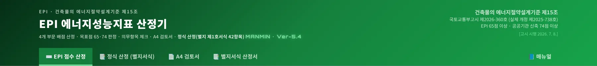
123456- 1EPI 점수 산정
- 2정식 산정(별지서식)
- 3A4 검토서
- 4별지서식 산정서 — 새 창
- 5📘 매뉴얼 — 이 매뉴얼을 새 창으로(탭 막대 오른쪽 끝)
- 6근거 고시·목표점·시행일 표시
헤더 오른쪽에는 판정 근거인 제15조와 고시 번호, 목표점(65점 · 공공기관 신축 74점), 시행일이 표시됩니다. 고시가 개정되면 이 표시와 4장 내용을 함께 확인하십시오.
1-3. 설치·보관·매뉴얼
- 앱 설치(PWA) — 화면 하단 설치 배너의 「설치하기」 또는 Edge·Chrome 주소창의 설치 아이콘. 설치 후에는 오프라인에서도 실행됩니다.
- 업데이트 — 새 버전이 배포되면 하단에 「지금 적용」 안내가 나옵니다. 헤더 부제의 버전 표기(
MANMIN · Ver-5.4)로 확인합니다. - 입력값 보관 — 입력값을 파일로 저장·불러오는 기능은 없습니다. 새로고침하거나 창을 닫으면 체크·배점 선택이 초기화되므로, 결과는 A4 검토서·산정서를 PDF 또는 JPG로 저장해 보관하십시오. (브라우저에는 별지서식 별도창 동기화용 임시값만 남습니다.)
- 매뉴얼 — 탭 막대 오른쪽 「📘 매뉴얼」 버튼을 누르면 이 문서가 새 창으로 열립니다. 주소: manminkim-eng.github.io/Energy-Performance-Index/manual/ — 매뉴얼은 오프라인 저장 대상이 아니어서 인터넷이 끊기면 안내만 표시됩니다.
025분 따라하기
예제(비주거 3,500㎡ · 중부2지역 · 민간)로 약식 점수를 확인하고, 정식 산정 후 별지서식 산정서까지 출력합니다. 실제 프로젝트도 같은 순서입니다.
- 공사 정보 입력「EPI 점수 산정」 탭 오른쪽 첫 카드에 공사명·작성자·작성일을 넣습니다. A4 검토서와 별지서식 산정서 표제에 그대로 들어갑니다. → 3-1
- 기본 설정건물 용도·기후대·기관 구분·연면적을 고릅니다. 목표점 배너에 65점(공공기관 74점)이, 아래에 해당하는 의무 안내가 표시됩니다. → 3-1
- 부문별 항목 체크부문 탭을 차례로 열어 설계에 반영한 항목을 누릅니다. 「의무 0.8점+」 배지가 붙은 항목부터 확인합니다. → 3-2
- 약식 점수 확인총점 패널에서 점수와 판정을 봅니다. 예제는 67 / 100점 · 목표 달성, 의무항목 5개가 모두 ✔입니다. → 3-3
- 정식 산정 — 기본 조건「정식 산정 (별지서식)」 탭을 엽니다. 지역·연면적·기관·공사 정보는 점수 산정 탭에서 자동으로 넘어오고, 기본배점 구분은 비주거 대형(3,000㎡ 이상)으로 잡힙니다. 중앙식 공조 등 조건을 체크합니다. → 3-4
- 배점 b 선택부문별 표에서 항목마다 설계값에 해당하는 배점(1.0~0.6점)을 고르면 평점(a×b)이 자동 계산됩니다. 예제는 76.00점 · 적합, 의무사항 6/6 충족입니다. → 3-6
- A4 검토서 확인「A4 검토서」 탭에서 미리보기를 확인하고 「🖨️ 약식 검토서 출력」 또는 「🖼️ JPG 저장」. → 3-7
- 별지서식 산정서 출력「🖨️ 별지서식 산정서 출력」 또는 탭 막대 「📑 별지서식 산정서」(새 창)에서 인쇄·PDF로 저장합니다. → 3-8
03탭별 기능 상세
각 탭의 입력란과 버튼, 판정 방식을 화면 순서대로 설명합니다.
3-1. 공사 정보 · 기본 설정
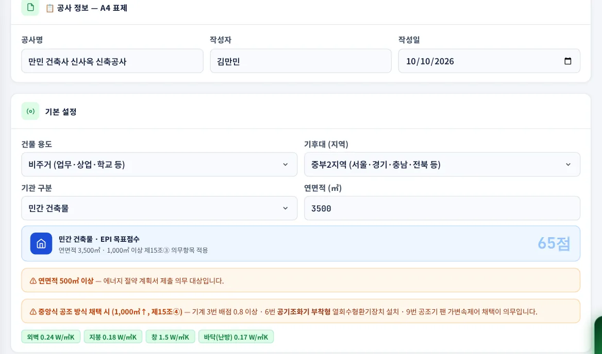
12345678- 1공사명
projName— A4 표제·PDF 파일명 - 2작성자
projAuthor - 3작성일
projDate - 4건물 용도 — 비주거 / 공동주택
- 5기후대 — 중부1 · 중부2 · 남부 · 제주
- 6기관 구분 — 민간 / 공공기관
- 7연면적(㎡)
floorArea - 8목표점 배너 — 목표점과 적용 조건 요약
| 조건 | 화면 반영 | 근거 |
|---|---|---|
| 목표점 | 민간 65점 · 공공기관 74점 | 제15조① |
| 연면적 500㎡ 이상 | 에너지절약계획서 제출 대상 안내 | 안내 문구 |
| 연면적 1,000㎡ 이상 | 건축 7번 0.6 · 기계 1·2번 0.8 · 전기 1번 0.8 · 신재생 4점 의무 표시 | 제15조③ |
| 중앙식 공조(1,000㎡ 이상) | 기계 3번 0.8 · 6번 공기조화기 부착형 열회수형환기장치 · 9번 채택 안내 | 제15조④ |
| 공공기관 3,000㎡ 이상 | 기계 1·2번 0.9 · 전기 8번 0.6 의무 체크(업무·교육연구 용도 여부는 사용자 판단) | 법 제14조의2 |
| 공공기관 10,000㎡ 이상 | 전기 8번(BEMS) 1.0점 의무 체크 | 별지 제1호서식 전기⑧ |
기본 설정 아래 녹색 칩은 선택한 기후대·용도에서 앱이 쓰는 참고 열관류율(외벽·지붕·창·바닥)입니다. 실제 판정은 설계도서의 평균 열관류율을 별표1 원문과 대조해 확인하십시오.
3-2. 부문별 항목 체크
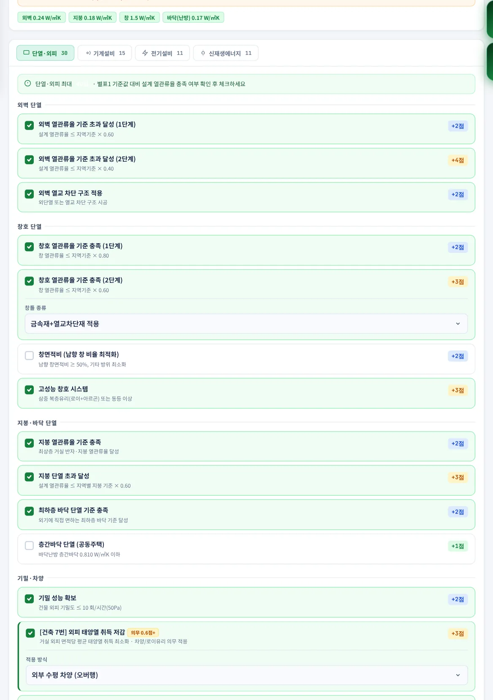
1234- 1부문 탭 — 탭 옆 숫자는 부문 점수
- 2항목 카드 — 누르면 체크(녹색)
- 3배점 배지(+2점 등)
- 4의무 배지 — 현재 조건에서 의무인 항목
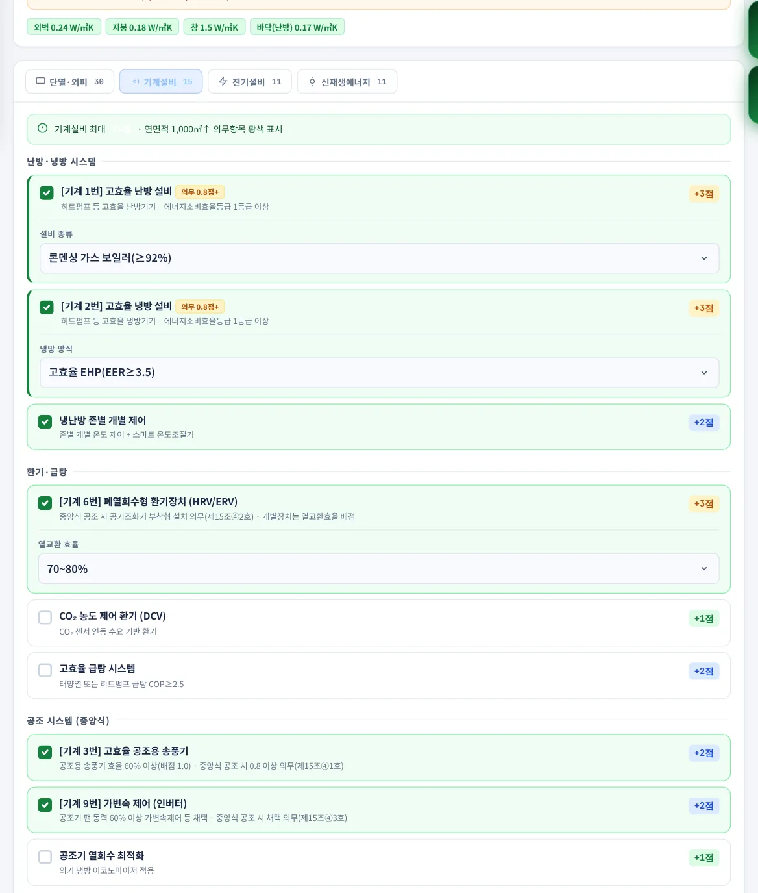
123- 1기계설비 탭
- 2기계 1번 고효율 난방 — 의무 0.8점+
- 3기계 6번 폐열회수형 환기장치
| 부문 | 주요 항목 | 부문 만점 |
|---|---|---|
| 단열·외피 | 외벽·창호·지붕·바닥 단열, 기밀, 외피 태양열 취득 저감(건축 7번) 등 | 40 |
| 기계설비 | 고효율 냉·난방(기계 1·2번), 송풍기(3번), 열회수환기(6번), 가변속(9번) 등 | 15 |
| 전기설비 | 조명밀도(전기 1번), 변압기·역률·대기전력·승강기, BEMS(전기 8번, 공공) 등 | 15 |
| 신재생에너지 | 태양광·태양열·지열·연료전지 등, 에너지 시뮬레이션·패시브 설계 | 30 |
3-3. EPI 총점 패널
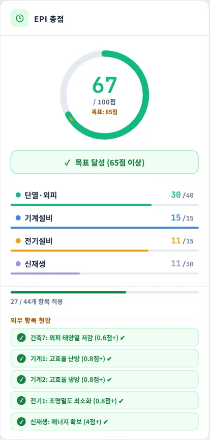
1234- 1EPI 총점 / 100점 · 목표점
- 2판정 — 목표 달성 여부
- 3부문별 점수 / 만점
- 4의무 항목 현황 — 충족 ✔ / 미충족 ✕
| 링 색 | 의미 |
|---|---|
| 녹색 | 총점 ≥ 목표점 |
| 주황 | 목표점의 80% 이상 ~ 목표점 미만 |
| 빨강 | 목표점의 80% 미만 |
링의 짧은 주황 눈금은 목표점 위치입니다. 「27 / 44개 항목 적용」은 체크한 항목 수입니다. 의무 항목 현황은 연면적·기관 조건(3-1 표)에 따라 자동으로 늘거나 줄며, 하나라도 ✕이면 점수와 관계없이 보완이 필요합니다.
3-4. 정식 산정 — 기본 조건
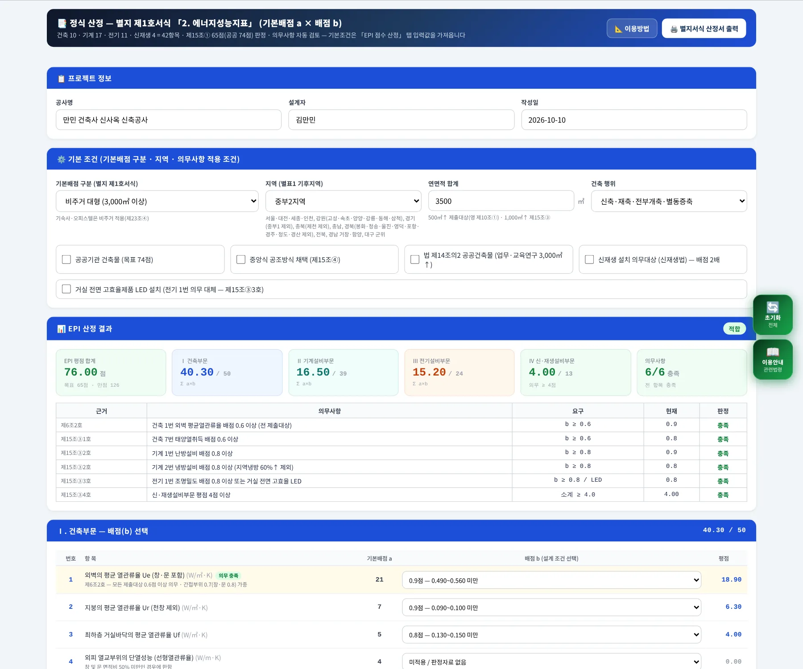
12345- 1이용방법 — 계산식·작업 순서 안내 창
- 2기본배점 구분(별지 제1호서식)
- 3지역(별표1 기후지역)
- 4연면적 합계
- 5적용 조건 체크 — 공공기관 등
| 입력 | 의미 |
|---|---|
| 기본배점 구분 | 비주거 대형(3,000㎡ 이상) · 비주거 소형(500~3,000㎡ 미만) · 주택1 · 주택2 — 연면적·용도로 자동 선택, 직접 변경 가능 |
| 지역 · 연면적 | EPI 점수 산정 탭 값을 가져옴(탭 진입 시) |
| 건축 행위 | 신축·재축·전부개축·별동증축 — 제15조③ 의무 적용 판단에 사용 |
| 공공기관 건축물 | 목표점 74점 |
| 중앙식 공조방식 채택 | 제15조④ 의무(기계 3·6·9번) 추가 |
| 법 제14조의2 공공건축물 | 건축 7번 0.6 · 기계 1·2번 0.9 · 전기 8번 0.6 의무 추가 |
| 신재생 설치 의무대상 | 신재생 부문 배점 기준 2배 적용 안내 |
| 거실 전면 고효율 LED | 전기 1번 의무를 대체(제15조③3호) |
3-5. 정식 산정 — 결과 · 의무사항
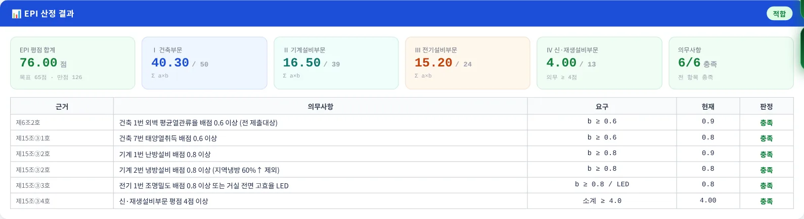
1234- 1EPI 평점 합계 — 목표점·만점
- 2부문별 소계 — Ⅰ건축 · Ⅱ기계 · Ⅲ전기 · Ⅳ신재생
- 3의무사항 충족 수
- 4의무사항 판정표 — 근거·요구·현재·판정
오른쪽 위 배지가 적합이 되려면 평점 합계가 목표점 이상이고 의무사항이 모두 충족되어야 합니다. 만점 표기(예제 126점)는 보상점수 항목(기계 16·17번)을 뺀 값입니다.
3-6. 정식 산정 — 부문별 배점 선택
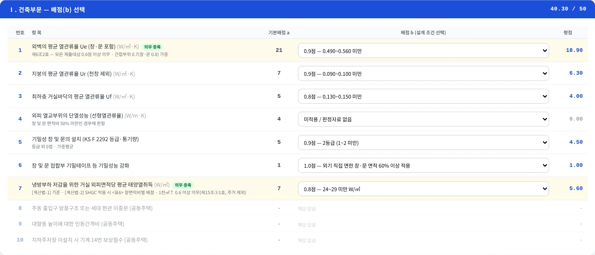
1234- 1기본배점 a — 기본배점 구분에 따라 자동
- 2배점 b 선택 — 설계값에 해당하는 구간
- 3평점 = a × b
- 4의무 표시 — 충족 / 미충족
| 항목 형식 | 선택 방법 |
|---|---|
| 등급형(grade) | 미적용 / 1.0 · 0.9 · 0.8 · 0.7 · 0.6점 — 선택지에 지역별 기준 구간(예: 외벽 Ue 0.490 미만)이 함께 표시 |
| 적용형(yes) | 미적용 / 1.0점 — 「60% 이상 적용」처럼 조건 충족 시 |
| 선택형(opt) | 항목 고유 선택지(예: T.A.B / 커미셔닝) |
| 해당 없음 | 선택한 기본배점 구분에 배점이 없는 항목(예: 공동주택 전용 항목) — 회색 표시 |
3-7. A4 검토서 · 출력
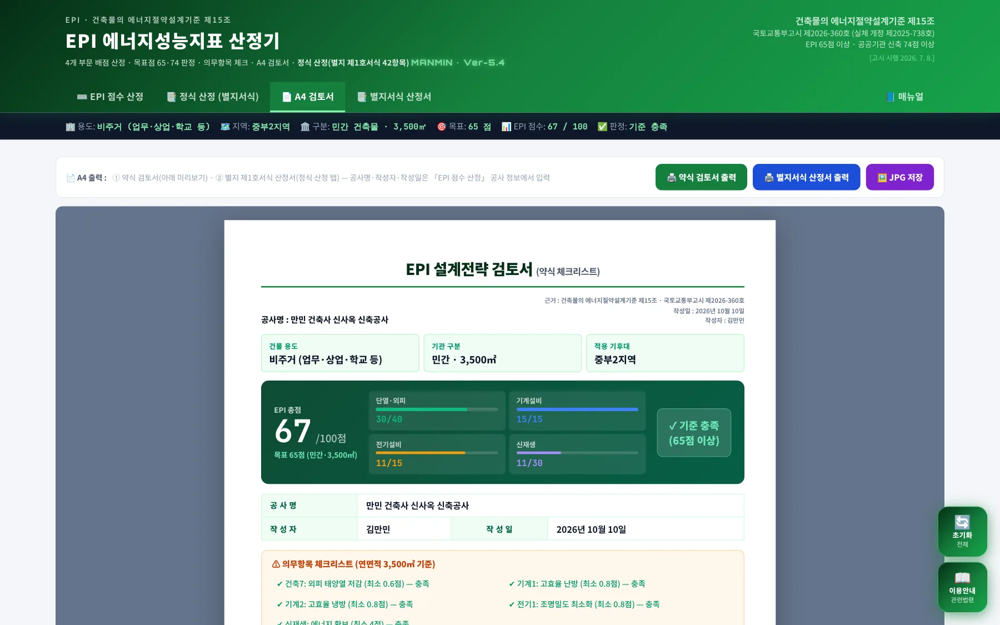
1234- 1🖨️ 약식 검토서 출력
- 2🖨️ 별지서식 산정서 출력
- 3🖼️ JPG 저장
- 4A4 미리보기(약식 설계전략 검토서)
| 출력물 | 제목 | PDF·파일 이름 |
|---|---|---|
| 약식 검토서 | EPI 설계전략 검토서(약식 체크리스트) | EPI_설계전략검토서_약식_공사명_YYYYMMDD |
| 별지서식 산정서 | 에너지성능지표(EPI) 산정서 — 별지 제1호서식 | EPI_산정서_별지1호서식_공사명_YYYYMMDD |
| JPG | 약식 검토서를 쪽별 이미지로 저장(미리보기 창에서 쪽별·전체 저장) | 쪽 번호가 붙은 JPG |
인쇄 창에서 대상을 「PDF로 저장」으로 고르면 PDF가 만들어집니다. 배경색이 빠지면 인쇄 설정의 「배경 그래픽」을 켭니다.
3-8. 별지서식 산정서 창
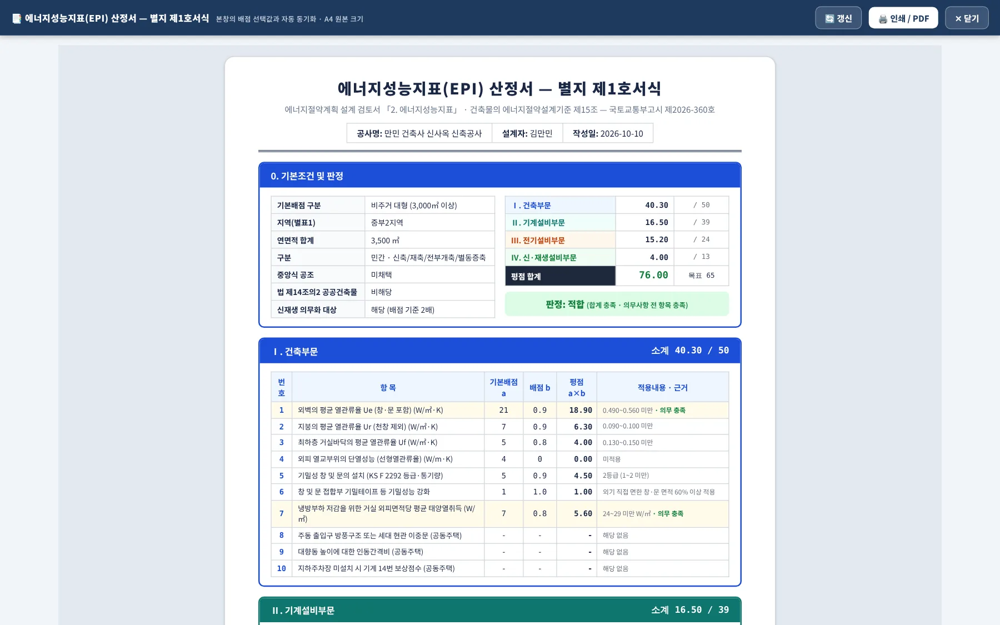
탭 막대 「📑 별지서식 산정서」를 누르면 별지 제1호서식 산정서만 담은 창이 열립니다. 본창에서 배점을 바꾸면 이 창에 바로 반영되고, 반영이 늦으면 「🔄 갱신」을 누릅니다. 팝업이 차단되면 안내 후 정식 산정 탭으로 이동합니다(브라우저에서 팝업 허용).
3-9. 이용안내 · 초기화
오른쪽의 「초기화」 버튼은 약식 체크와 입력을 처음 상태로 되돌립니다(확인 창 표시). 정식 산정 탭의 배점 선택은 탭 안의 초기화 버튼으로 따로 지웁니다.
3-10. 모바일
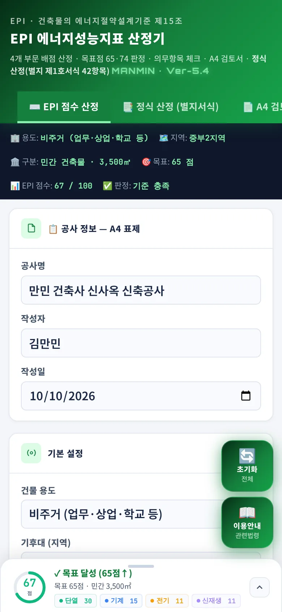
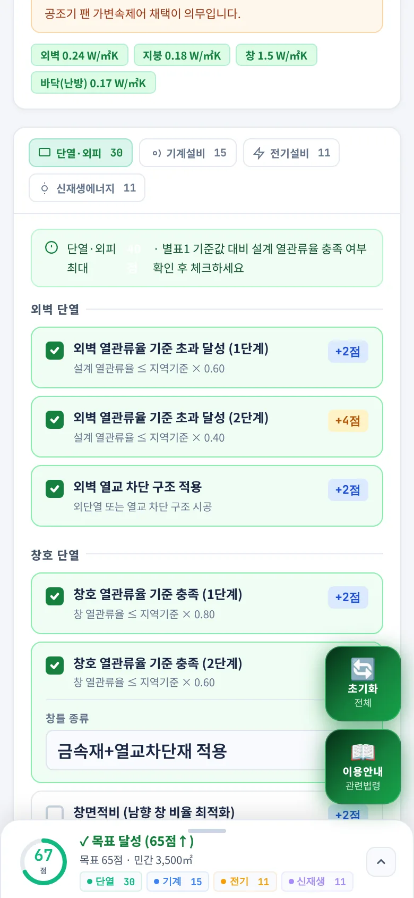
폭 820px 이하에서는 총점 패널 대신 화면 아래에 점수바가 고정됩니다. 현장·회의 중 점수 확인은 휴대전화로, 정식 산정과 출력은 PC에서 하는 것을 권장합니다.
04기술기준 해설
이 장의 조문은 「건축물의 에너지절약설계기준」 국토교통부고시 제2026-360호(2026.7.8. 시행) 원문을 2026-10-10 법령 데이터베이스(LawMCP)로 조회해 옮겼습니다. 고시가 개정되면 원문을 다시 확인하십시오.
4-1. EPI 판정 기준 (제15조①②)
| 구분 | 기준 | 근거 |
|---|---|---|
| 일반 건축물 | 평점합계 65점 이상이면 적합 | 제15조① 본문 |
| 공공기관 신축(별동 증축 포함) | 평점합계 74점 이상이면 적합 | 제15조① 단서 |
| 배점 판단 | 제출자가 제시한 설계도면·자료로 판정, 자료가 없으면 적용되지 않은 것으로 간주 | 제15조② |
4-2. 평점 산식 (별지 제1호서식)
| 기본배점(a) 구분 | 대상 |
|---|---|
| 비주거 대형 | 3,000㎡ 이상 |
| 비주거 소형 | 500~3,000㎡ 미만 |
| 주택 1 | 난방(개별·중앙집중식·지역난방) 적용 공동주택 |
| 주택 2 | 주택 1 + 중앙집중식 냉방 적용 공동주택 |
배점(b)은 항목마다 1점 · 0.9점 · 0.8점 · 0.7점 · 0.6점 구간으로 정해지며, 구간 기준은 지역(중부1·중부2·남부·제주)과 항목에 따라 다릅니다. 서식의 에너지성능지표는 건축 10 · 기계설비 17 · 전기설비 11 · 신재생설비 4, 모두 42항목입니다.
| 부문 | 항목 수 | 비주거 대형 기본배점 합 |
|---|---|---|
| Ⅰ 건축 | 10 | 50 |
| Ⅱ 기계설비 | 17 (16·17번 보상점수) | 39 (보상점수 제외) |
| Ⅲ 전기설비 | 11 | 24 |
| Ⅳ 신재생설비 | 4 | 13 |
| 합계 | 42 | 126 |
4-3. 의무사항
| 대상 | 의무 내용 | 근거 |
|---|---|---|
| 모든 제출 대상 | 건축부문 1번(외벽 평균 열관류율) 배점 0.6점 이상 | 제6조2호 |
| 연면적 1천㎡ 이상 신축·재축·전부개축·별동증축 | 건축 7번 0.6점 이상 · 기계 1·2번 0.8점 이상 · 전기 1번 0.8점 이상(또는 거실 전면 고효율 LED) · 신재생 평점 4점 이상 | 제15조③ |
| 위 건축물로 중앙식 공조 | 기계 3번 0.8점 이상 · 기계 6번 공기조화기 부착형 열회수형환기장치 설치 · 기계 9번 채택 | 제15조④ |
| 법 제14조의2 공공건축물 | 건축 7번 0.6점 이상(제로에너지 인증 등 예외) · 기계 1·2번 0.9점 이상 · 전기 8번 0.6점 이상 | 제6조5호 · 별지 제1호서식 의무사항 |
4-4. 약식 체크리스트와 정식 산정의 관계
| 구분 | 약식(EPI 점수 산정) | 정식(별지서식) |
|---|---|---|
| 쓰는 시점 | 계획설계 — 어느 부문을 강화할지 결정 | 기본·실시설계 — 배점 확정, 허가 제출 |
| 항목 | 4부문 44항목(약식 설명) | 별지 제1호서식 42항목 |
| 점수 | 항목 고유 배점 합, 100점 만점 | 평점 = a × b 합(대형 비주거 만점 126) |
| 판정 | 목표점 대비 달성 여부 + 의무 5~8항목 | 목표점 + 의무사항 전체 |
| 출력 | 약식 설계전략 검토서 | 별지 제1호서식 산정서 |
05실무 작업 방법
설계 단계별로 두 방식을 나눠 쓰고, 제출 전에는 의무사항과 근거 자료를 먼저 확인합니다.
5-1. 설계 단계별 절차
- 계획설계기본 설정으로 목표점과 의무항목을 확인하고, 약식 체크리스트로 부문별 전략(단열 강화·고효율 설비·신재생 규모)을 정합니다.
- 기본설계정식 산정 탭에서 외벽·지붕·바닥 평균 열관류율, 설비 효율 등 값이 정해진 항목부터 배점 b를 넣어 목표점 여유를 확인합니다.
- 실시설계모든 항목 배점을 확정하고 의무사항이 6/6처럼 모두 충족되는지 확인합니다. 근거 도면 번호를 정리합니다.
- 허가 제출별지서식 산정서를 PDF로 저장해 에너지절약계획서에 첨부하고, 약식 검토서는 설계 검토 기록으로 보관합니다.
5-2. 제출 전 확인
- 기본배점 구분이 연면적·용도와 맞는지(대형 3,000㎡ 기준) 확인합니다.
- 중앙식 공조, 공공기관, 법 제14조의2 대상 여부를 체크해 의무사항이 빠지지 않게 합니다.
- 배점마다 판정 근거(도면·시험성적서·제품 인증)가 있는지 확인합니다 — 없으면 미적용 간주(제15조②).
- 고시 개정 여부를 헤더 표시와 법령 원문으로 확인합니다.
5-3. 예제 결과
| 방식 | 결과 |
|---|---|
| 약식 | 67 / 100점 · 목표 65점 달성 · 의무 5항목 충족(단열·외피 30 · 기계 15 · 전기 11 · 신재생 11) |
| 정식 | 76.00점 · 적합 (건축 40.30 · 기계설비 16.50 · 전기설비 15.20 · 신재생 4.00) · 의무사항 6/6 충족 |
06문제 해결 · FAQ
| 증상 | 해결 |
|---|---|
| 약식 점수와 정식 점수가 다릅니다 | 배점 체계가 다릅니다. 약식은 설계 전략용 100점 환산, 정식은 별지 제1호서식 a×b 합입니다. 제출에는 정식 결과를 씁니다. |
| 목표점이 74점으로 나옵니다 | 기관 구분이 「공공기관」으로 되어 있습니다. 공공기관 신축(별동 증축 포함)은 74점입니다(제15조①). |
| 의무 항목이 갑자기 늘었습니다 | 연면적을 1,000㎡·3,000㎡·10,000㎡ 이상으로 바꾸거나 공공기관·중앙식 공조를 선택하면 해당 의무가 추가됩니다(3-1 표). |
| 새로고침하니 입력이 사라졌습니다 | 입력값 파일 저장 기능이 없습니다. 작업 결과는 PDF·JPG로 저장해 두십시오(1-3). |
| 별지서식 산정서 창이 안 열립니다 | 브라우저 팝업이 차단된 경우입니다. 주소창의 팝업 허용 후 다시 누르거나 정식 산정 탭에서 「별지서식 산정서 출력」을 씁니다. |
| PDF에 배경색이 없습니다 | 인쇄 창 「설정 더보기」에서 「배경 그래픽」을 켭니다. |
| 매뉴얼 버튼이 열리지 않습니다 | 매뉴얼은 인터넷 연결이 필요합니다. 오프라인이면 안내 문구만 표시됩니다. |
부록참고 자료
A1. 예제 입력값
| 구분 | 값 |
|---|---|
| 공사 정보 | 만민 건축사 신사옥 신축공사 · 김만민 · 2026-10-10 |
| 기본 설정 | 비주거 · 중부2지역 · 민간 건축물 · 연면적 3,500㎡ |
| 약식 체크(27항목) | 단열·외피 12(외벽 1·2단계, 열교, 창호 1·2단계, 고성능 창호, 지붕 기준·초과, 최하층 바닥, 기밀, 건축 7번, SHGC 제한) · 기계 6(기계 1·2번, 존별 제어, 기계 6번, 기계 3·9번) · 전기 6(전기 1번, LPD 30%, 외부 조명, 변압기, 대기전력, 승강기) · 신재생 3(태양광, 패시브 설계, 빗물·중수) |
| 정식 배점 b | 건축 1·2번 0.9, 3번 0.8, 5번 0.9, 6번 1.0, 7번 0.8 · 기계 1번 0.9, 2·4번 0.8, 7·13번 1.0, 15번 T.A.B · 전기 1번 0.8, 2·4·5·6번 1.0, 8·10번 0.8 · 신재생 1번 1.0 |
A2. 버전 변경 내역
| 판 | 변경 내용 |
|---|---|
| Ver-5.4 (2026-10-10) | 사용자 매뉴얼 연결 — 탭 막대 「📘 매뉴얼」, 매뉴얼 웹·PDF 공개(계산 변경 없음) |
| v5.4.2 (2026-09-06) | 별지서식 산정서 미리보기 모바일 좌측 쏠림 정정(중앙 정렬) |
| v5.4 (2026-09-05) | 별지서식 산정서 별도창 · 본창과 실시간 동기화 |
| v5.3 (2026-09-05) | 출력물 2종 구분(약식 검토서 / 별지서식 산정서) · 파일 이름 규칙 |
| v5.2 (2026-09-05) | 정식 산정(별지 제1호서식 42항목) 탭 추가 · 의무사항 자동 판정 |
| v5.1 (2026-09-05) | 법규 정합성 패치 — 목표점 면적 무관 65·74점, 중앙식 공조·법 제14조의2 의무 반영 |
| v5.0 (2026-09-04) | MANMIN v5.0 디자인 통일 · A4 검토서 탭 |
A3. 용어
| 용어 | 뜻 |
|---|---|
| EPI | 에너지성능지표 — 별지 제1호서식 항목별 평점의 합계 |
| 기본배점(a) | 항목별 기본 점수 — 비주거 대형·소형, 주택1·2로 구분 |
| 배점(b) | 설계 수준에 따른 계수 1.0~0.6점 |
| 평점 | 기본배점 × 배점 |
| 평균 열관류율(Ue·Ur·Uf) | 외벽(창 포함)·지붕·최하층 바닥 부위별 열관류율의 면적가중 평균 |
| 의무사항 | 점수와 별도로 반드시 충족해야 하는 항목 — 미충족 시 부적합 |
| 보상점수 | 지역난방·개별냉난방 등으로 특정 항목 적용이 불가할 때 주는 점수(기계 16·17번) |